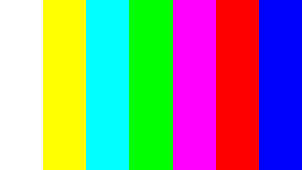

Опис тестів монітора, дисплея мобільного телефона
Ласкаво просимо
monitor-test.apartner.top – сервіс для тестування монітора комп'ютера або дисплея мобільного пристрою. За допомогою тестових екранів ви можете легко налаштувати параметри монітора, щоб отримати найкращу якість зображення. Ряд тестів допоможуть оцінити якість зображення монітора. Навіть із перших тестових екранів, ви можете відкалібрувати монітор, відрегулювавши яскравість, контрастність, фазу синхронізації, різкість та гамму-корекцію монітора.
Тести найкраще розглядати при тьмяному або темному навколишньому світлі та в повноекранному режимі. Під час запуску тестів буде автоматично запропоновано перейти у повноекранний режим. Під час руху покажчика миші внизу екрана з'явиться панель керування тестами. За допомогою елементів керування на панелі ви зможете вибирати потрібний вам тест, повертати слайд (якщо це передбачено тестом), повернутися на головну сторінку або вимкнути повноекранний режим. З лівого та правого боку екрана під час руху миші відображаються кнопки переходу між тестами. Елементи керування для зручності зникають з екрана за відсутності руху вказівника миші. Крім того, передбачені гарячі клавіші керування. Для переходу між тестовими екранами використовуйте клавіші «Вліво», «Вправо» або «Пробіл», або коліщатко миші. Для повороту слайдів - "Вгору" і "Вниз", для виходу з тесту - "Esc".
Якщо у вас встановлені будь-які системи керування кольором, що діють в операційній системі або додаткове коригуюче ПЗ відеокарти, рекомендується відключити їх у першу чергу. Для початку необхідно внести коригування в налаштування монітора, щоб його характеристики були якомога ближче до ідеалу, наскільки це можливо, і тільки після цього використовувати будь-яке програмне забезпечення керування кольором, щоб компенсувати будь-які малі можливі відхилення чи недоліки.
Далі описано, що і як можна перевірити за допомогою тестів сервісу monitor-test, на що слідує звернути увагу та інші корисні поради.
Передача кольору

Цей класичний шаблон використовується для перевірки налаштування основних кольорів та відтінків. В даний час особливих проблем із передачею кольору зазвичай не виникає (особливо на LCD моніторах), так що вам, швидше за все, навіть не потрібно змінювати ці налаштування. Цей тест може бути використаний для перевірки того, що монітор правильно відображає кольори без будь-яких артефактів. Якщо ваш монітор підтримує фільтри (або є фільтрації кольорів), то ви можете з допомогою таких фільтрів перевірити, що монітор чітко передає кольори без домішок (тобто. наприклад, при використанні червоного фільтра червона смуга не повинна змінювати відтінок).
Биті пікселі

У сучасних моніторах для відтворення кольорів використовується колірна модель RGB (Абревіатура англійських слів Red, Green, Blue - червоний, зелений, синій). Кожен піксель екрану складається із трьох каналів. Змішування цих трьох кольорів у різній інтенсивності дають різні кольори, однакової інтенсивності відтінки сірого. У серії тестів кольору є одноколірні шаблонні екрани. У цих тестах використовується лише один певний колірний канал. Окремо червоний екран, окремо зелений та синій.
Ці тести, крім повноти кольору каналу, дозволяють зробити перевірку на биті пікселі або як їх ще називають - мертві пікселі. Для перевірки на биті пікселі необхідно на одноколірному тестовому екрані уважно переглянути весь екран. На ньому не повинно бути чорних крапок. Перевіряти потрібно кожен канал, т.к. кожен піксель складається із трьох каналів. Тому зовсім не обов'язково, якщо на одному каналі все добре, то і на іншому буде все в порядку. Якщо ви знайшли чорну точку на одному з цих тестів, значить ви знайшли битий піксель. Напевно, наявність дефекту навіть в одному з каналів пікселя призведе до спотворення кольоровідтворення в даному пікселі (точці). Наявність кількох мертвих пікселів є нормальною для старих моніторів, але новий не повинен мати таких дефектів.У даній серії додатково є тести змішування каналів: жовтий колір (червоний+зелений), пурпуровий (червоний+синій), блакитний (зелений+синій) та білий (червоний+зелений+синій).
Градієнти


У цій серії тестів представлені екранні шаблони з плавними градієнтами. Усі градієнти повинні відображатися гладко, без будь-яких смуг, ліній та різкої зміни кольору. Смуги з'являються якщо монітор не в змозі правильно відтворити справжні кольори та плавний перехід. Хороший монітор відображатиме абсолютно плавний перехід.
Мерехтіння


На багатьох VGA-моніторах потрібно коригувати так званий параметр clock/phase (Синхронізація фази). Дані тестові зображення краще розглядати в повноекранному режимі. На великій відстані від монітора вони мають виглядати сірими. При близькому розгляді повинен бути чітко видно дрібний візерунок контрастних пікселів (чорних та білих), що чергуються.
При неправильно настроєній синхронізації зображення мерехтять або створюється враження "бігаючих пікселів". Або якщо зображення виглядають суцільним сірим кольором (не видно точок навіть за близького розгляду) або є чорно-білі смуги (вертикальні або вигнуті), то також необхідне коригування.
Більшість моніторів мають функцію автоматичного налаштування цього параметра. Зазвичай вона називається "Auto" або "AutoSet". Залежно від типу монітора можуть бути опції ручного налаштування.
Різкість

Резкость очень важна. Резкость отвечает за уровень четкости границы между светлыми и темными участками. Например, если вам кажется, что буквы текста размыты, то скорее всего уровень резкости недостаточен. Настроив определенный уровень резкости на дисплее можно получить приятный для глаза картинку или текст. Но чрезмерная резкость так же плохо, как недостаточная.
В отличие от яркости, контрастности, цвета и оттенка, не существует «идеального» уровня резкости. Т.к., по крайней мере частично, восприятие и оптимальное значение резкости изображения зависит от целого ряда факторов, включая способ отображения, размер экрана и как далеко вы обычно находитесь от экрана.
На тесте, пример которого приведен выше, при достаточном уровне резкости вы должны четко видеть мелкие узоры в шахматном порядке. При недостатовной резкости некоторые квадраты сливаются в сплошной серый цвет. Центральный круг должен четко выделяться.

На іншому тесті ви повинні бачити чіткі прямогуольники та лінії без розмитих країв, ореолів та інших артефактів. Діагональні лінії також мають бути рівними.
Контрастність та яскравість

У цій серії тестів на зображеннях ви повинні бачити чіткі межі між смужками та квадратами. Якщо якісь ділянки зливаються і стають одного кольору або не видно на тлі зовсім, то отже необхідно відрегулювати яскравість та контрастність. На хорошому моніторі, ви повинні побачити рівні ступені яскравості у всьому представленому в тестах діапазоні та у всіх кольорах.
Зонна яскравість

Цей тест хороший спосіб перевірити рівень загального відтворення яскравості, і непоганий шаблон для перевірки чіткості. Центральна частина екрана має виглядати гладкою та чистою. Далі від центру, ближче до краям, контури повинні бути все більш і більш різкими і менш гладкими. Ближче до країв екрана можуть з'явитися уявні помилкові концентричні кола. Якщо ці контури яйцеподібні чи овальні, то щось не так. У кутах екрану можливий невеликий, майже непомітний спад яскравості. Якщо спад яскравості великий або все зливається, то це не так добре з монітором чи дисплеєм.
Геометрія та сітки

Ці тести призначені для перевірки правильної геометрії та вписуваності зображення, що відтворюється монітором.
Відсікання зображення
Не кожен екран насправді показує вам кожен піксель, який передається відеокартою монітору. Цей тест покаже вам, яка частина зображення відсутня. Якщо монітор налаштований правильно, ви повинні побачити білу лінію на зовнішній кромці всіх пронумеровані прямокутники по всьому краю екрану. Якщо у деяких прямокутників бракує зовнішньої білої лінії біля краю екрана, то це означає, що край зображення обрізається. Номер у такого відсіченого прямокутника показує, як багато пікселів не вистачає на цьому краю екрана.
Формат 16:9

Тест, приклад якого наведено вище, призначений для перевірки широкоформатних дисплеїв із співвідношенням сторін 16:9. Тут ви повинні побачити сітку з 16 однакових квадратів по горизонталі та 9 таких же квадратів за вертикаллю. По кутах повинні бути видно кола правильної форми. Якщо ви їх не бачите або вони відсічені чи спотворені, то ваш монітор або не підтримує відповідний режим, або необхідно налаштувати масштабування зображення, яке може бути в сервісному меню дисплея.